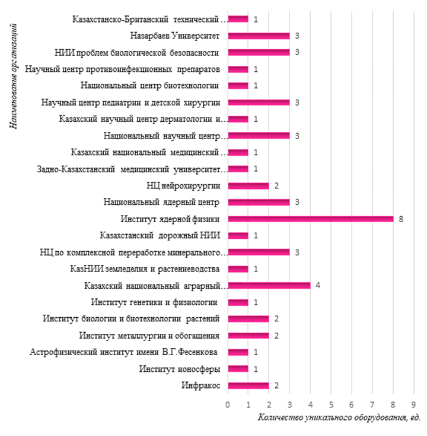

3 ВОПРОСЫ РАЗВИТИЯ НАУЧНОЙ ИНФРАСТРУКТУРЫ
3.1.1 Паспорт базы данных
На данный момент формируется комплексная база данных, охватывающая все ключевые аспекты функционирования организации. Она разработана с целью обеспечения структурированного и системного подхода к сбору, хранению и анализу информации о ресурсах, процессах и персонале. База данных состоит из серии форм, каждая из которых служит определенной цели и направлена на улучшение управленческих процессов, повышение эффективности работы и укрепление внутренней и внешней связи структурных подразделений.
Форма 1 служит в качестве фундаментального блока, предоставляя общую информацию об организации, включая ее историю, структуру и основания для юридического существования. От форм 2 до 4 база данных охватывает все филиальные подразделения, имущество и инфраструктуру, обеспечивая точный и актуальный учет ресурсов. С форм 5 по 7 внимание переключается на подвижные активы и оборудование, от транспортных средств до оргтехники, что позволяет отслеживать их состояние и эффективность использования.
Следующие формы (от 8 до 12) обеспечивают детальное представление о дополнительных активах, включая те, которые предполагается приобрести или списать, что важно для финансового планирования и управления активами. Формы 13 и 14 затрагивают важные аспекты безопасности и приобретения нового оборудования, подчеркивая нашу приверженность поддержанию высоких стандартов в области безопасности и технического обновления.
Форма 15 до 17 раскрывает научную и исследовательскую деятельность, представляя информацию о лабораторных подразделениях, их текущих проектах и научных достижениях. Это обеспечивает основу для управления знаниями и способствует научному сотрудничеству. Формы 18 до 23 ориентированы на персонал, образовательные инициативы, производственные процессы и информационные системы, что подчеркивает нашу ориентацию на непрерывное обучение, инновации и технологическое развитие.
Каждая форма базы данных специально разработана для удовлетворения уникальных потребностей организации и представляет собой ценный инструмент для управления и стратегического планирования.
1. Общая информация:
· Форма 1: Содержит данные об организации, включая официальное наименование, адрес, год учреждения и основания правового статуса.
2. Филиалы:
· Форма 2: Включает сведения о филиалах организации, в том числе название, местоположение, дату открытия и учредительные документы.
3. Земельные участки:
· Форма 3: Запрашивает детали по земельным активам организации, включая категорию, адрес, кадастровый идентификатор, размер, назначение, сведения о выдающем акте и правах на пользование.
4. Здания и сооружения:
· Форма 4: Собирает информацию о недвижимости организации, в том числе адрес, кадастровый номер, площадь, год создания, данные об амортизации, остаточную стоимость и уровень износа.
5. Транспортные средства:
· Форма 5: Охватывает сведения о транспортных средствах организации, такие как марка, модель, номерной знак, год выпуска, текущее состояние, потребность в ремонте, эксплуатационные параметры и рекомендации по оптимизации использования.
6. Лабораторное оборудование:
· Форма 6: Отражает сведения о лабораторном оборудовании, имеющемся у организации, его состоянии и необходимости обновления или ремонта.
7. Оргтехника:
· Форма 7: Фиксирует информацию о наличии оргтехники в организации, ее количестве, состоянии и потребности в обслуживании.
8. Прочие основные средства:
· Форма 8: Собирает данные о прочих активах организации, их состоянии и характеристиках эксплуатации.
9. Трудовые ресурсы:
· Форма 9: Содержит описание потребностей организации в рабочей силе, включая информацию о текущих и предстоящих вакансиях, а также требования к квалификации сотрудников.
10. Арендные отношения:
· Форма 10: Содержит информацию об арендаторах, использующих имущество организации, с подробностями договоров аренды и их условиях.
11. Имущество в аренде:
· Форма 11: Отражает детали по объектам, сдаваемым организацией в аренду, включая условия и сроки предоставления.
12. Списание активов:
· Форма 12: Сведения о списании активов, причины, побудившие к этому, и документальное оформление процесса.
13. Приобретение активов:
· Форма 13: Перечень имущества и оборудования, приобретаемого организацией, планируемые расходы и источники финансирования.
14. Обеспечение безопасности:
· Форма 14: Описание мер по обеспечению физической безопасности объектов, системы охраны и стратегии улучшения безопасности.
15. Лаборатории организации:
· Форма 15: Обзор лабораторий, включая их специализацию, научную деятельность и информацию о работе исследователей.
16. Текущие проблемы:
· Форма 16: Анализ текущих проблем организации, охватывающий финансовые, технические и кадровые аспекты.
17. Исследовательские проекты:
· Форма 17: Данные о текущих и планируемых проектах, их целях, ожидаемых результатах.
18. Персонал и достижения:
· Форма 18: Информация о персонале лабораторий, их квалификации, научных достижениях, включая публикации и участие в мероприятиях.
19. Обучение и развитие:
· Форма 19: Описание программ обучения и повышения квалификации для сотрудников.
20. Производственная деятельность:
· Форма 20: Описание производственных процессов, характеристики выпускаемой продукции.
21. Информационные технологии:
· Форма 21: Описание информационных систем, применяемых в организации, их функционала и планы по обновлению.
22. Каталог услуг:
· Форма 22: Перечень услуг, предоставляемых организацией, их характеристики и доступность.
23. Научный сотрудник:
· Форма 23: Профиль научного сотрудника, включающий сферу исследований, публикации, научные интересы и достижения.
1) Общая информация
База данных включает 64 научные организации. Из них основная часть имеет государственный тип собственности (табл. 3.1.1).
Таблица 3.1.1.
Организации принадлежат к 10 министерствам. Наибольшая их часть находится в ведении Министерства сельского хозяйства – 31 организация, Комитета науки Министерства науки и высшего образования, Министерства здравоохранения (рис. 3.1.1).
Юридический статус ТОО имеют 27 организаций (42%), РГП на ПХВ – 20 организаций (31%), АО – 8 организаций (13%), НАО – 6 организаций (9%), РГУ, ГУ – 2 организации (3%), ДТОО – 1 организация (2%) (рис. 3.1.2).
47% научных организаций расположены в г. Алматы (28) и Алматинской области (2), 26% - расположены в г. Астане (13) и Акмолинской области (4). Остальные расположены в г. Кызылорде, Шымкент, Севере-Казахстанской, Карагандинской, Западно-Казахстанской, Туркестанской, Жамбылской, области Абай (рис 3).
Половина из представленных организаций были созданы до 2000 года. Одними из самых старейших являются: Казахский научно-исследовательский ветеринарный институт – основан в 1905 году, Красноводопадская сельскохозяйственная станция – в 1911 году.
Рисунок 3.1.1. Принадлежность организаций по министерствам
Рисунок 3.1.2. Юридические статусы
Рисунок 3.1.3. Географическое положение
34 учреждения или 53% являются очень крупными (имеют в своем составе более 100 сотрудников), 29 или 45% - крупные (от 30 до 100 сотрудников), 1 или 2% - малое (Научный институт изучения Улуса Джучи - до 10 чел.).
В 45 организациях имеются лаборатории. Общее количество лабораторий составляет 314 ед. Максимальное количество лабораторий имеется в Казахском национальном аграрном исследовательском университете – 49, Национальном ядерном центре – 27, Институте Ядерной Физики – 19, Национальном центре биотехнологии – 15; Институте информационных и вычислительных технологий – 14, Научно-исследовательском институте проблем биологической безопасности, Национальном научном центре особо опасных инфекций им. М.Айкимбаева, Казахском научно-исследовательском институте земледелия и растениеводства – по 13 (Приложение 3.1.1).
2) Филиалы
Филиалы имеются в 20 организациях, что составляет 31% от общего количества (рис. 4).
Наибольшее количество филиалов находится в Казахском научно-исследовательском ветеринарном институте – 6, которые расположены в разных областях страны (Жамбылская, Южно-Казахстанская, Восточно-Казахстанская, Западно-Казахстанская, Костанайская, Карагандинская). Штатная численность составляет 41 чел.
В Национальном центре по комплексной переработке минерального сырья Республик Казахстан насчитывается 5 филиалов, расположенных в городах Караганда (1), Астана (1), Алматы (2) и Усть-Каменогорск (1). Штатная численность составляет 596 чел.
Рисунок 3.1.4. Филиалы научных организаций
В Национальном ядерном центре Казахстан находятся самые крупные 4 филиала, штатная численность составляет 1844 чел. Все 4 филиалы расположены в г. Курчатов.
Всего в 20 филиалах насчитывается 43 лаборатории (Приложение 3.1.2).
3) Земельные участки
50 организаций из 64 имеют земельные участки различной площади, в том числе 19 организаций - более 100 га (рис. 3.1.5), 31 организация – до 100 га (рис 6).
Наибольшие земельные площади имеют Карагандинская СХОС - 36375,8089 га, Северо-Казахстанская СХОС - 26 001,40 га, Карабалыкская СХОС - 16647,3222 га.
Право землепользования различное: постоянное землепользование, хозяйственное ведение, временное безвозмездное землепользование, временное возмездное землепользование (аренда), общее долевое постоянное землепользование, частная собственность, индивидуальная.
Например, у Карагандинской СХОС 99,5% - земли сельхозназначения и находятся во временном возмездном землепользовании. Такая же ситуация наблюдается по остальным сельскохозяйственным опытным станциям, НИИ аграрного профиля и КазНАИУ (Приложение 3.1.3).
Рисунок 3.1.5. Организации, имеющие площади более 100 га
Рисунок 3.1.6. Организации, имеющие площади до 100 га
4) Здания и сооружения
Научные организации имеют на своем балансе 2747 зданий и сооружений, из них 29% имеют износ более 50%.
Отдельные здания построены в 40-60-х годах: Институт географии водной безопасности, Институт космической техники и технологий, Ғылым Ордасы, Медицинский университет Караганды, Национальный центр общественного здравоохранения, Казахский национальный аграрный исследовательский университет, Казахский научный центр дерматологии и инфекционных заболеваний. Эти здания имеют самую высокую степень износа (рис. 3.1.7- 3.1.8).
Рисунок 3.1.7. Здания и сооружения, ед.
Рисунок 3.1.8. Стоимость амортизации, первоначальная стоимость зданий и сооружений
Общая площадь составляет 1 243 249,88 кв. м, из нее используется в работе научной организации – 1197363,91 кв. м или 96,3%, передано в аренду - 7603,23 кв. м (0,6%), не используется или пустует - 38282,74 кв. м (3,1%).
Самый высокий процент переданных в аренду площадей в следующих организациях: Казахский научно-исследовательский институт экономики агропромышленного комплекса и развития сельских территорий – 41,3%, Research & Development центр» Казахстан инжиниринг – 34,1%, Казахский научно–исследовательский институт перерабатывающей и пищевой промышленности – 20,1%.
Больше всего не используются или пустуют площади в организациях: Казахский научно–исследовательский институт перерабатывающей и пищевой промышленности – 30,9%, Карабалыкская сельскохозяйственная опытная станция – 37%. В Казахском научном центре дерматологии и инфекционных заболеваний 1 058,30 кв. м, которые составляют 9,7% от общей площади организации, готовятся на передачу (Приложение 3.1.4).
6) Транспортные средства
Всего на балансе научных организаций находятся 2162 ед. транспорта, из них 262 ед. или 12,1% - в нерабочем состоянии.
В Research & Development центре на балансе находится один автомобиль «Газ 3307» и он - в не рабочем состоянии. 50% транспорта находится в нерабочем состоянии в Северо-Казахстанский НИИСХ – 2 ед. из 4 ед., СХОС хлопководства и бахчеводства – 3 из 6 ед., Казахский научно-исследовательский институт экономики агропромышленного комплекса и развития сельских территорий – 1 из 2 ед., 40% - Павлодарском научно-исследовательском институте сельского хозяйства – 4 из 10 ед.
Наибольшее количество транспортных средств в следующих организациях: Карабалыкская сельскохозяйственная опытная станция – 550 ед., Национальный ядерный центр -376 ед., Северо-Казахстанская сельсохозяйственная опытная станция – 95 ед., Юго-Западный научно-исследовательский институт животноводства и растениеводства – 86 ед., Казахский научно-исследовательский институт рисоводства им. И. Жахаева – 74 ед.
Во многих научных организациях на балансе кроме транспорта находится сельскохозяйственная техника.
Некоторые организации не имеют своего транспорта и берут его в аренду. Например, институт философии, политологии и религиоведения.
По мнению научных организаций, в целях экономической целесообразности необходимо обновить автопарк, т.к. частые поломки требуют существенных вложений (Приложение 3.1.5).
7) Лабораторное оборудование
В научных организациях на балансе находится 16250 ед. лабораторного оборудования, в том числе 583 ед. имеет год выпуска до 2000 года или 3,6%, 13563 ед. – с 2000 до 2021 гг. или 83,5%, 2021-2023 гг. – 2104 ед. или 12,9%.
За последние 3 года было приобретено: 2021 г. – 1124 ед. (6,9%), 2022 г. – 757 ед. (4,6%), 2023 г. – 223 ед. (1,4%).
Больше всего устаревшего оборудования (выпуск до 2000 года) находится в ТОО «Карабалыкская сельскохозяйственная опытная станция» - 10,2%, ТОО «Карагандинская сельскохозяйственная опытная станция имени А.Ф. Христенко» - 10,0%, ТОО НПЦ ЗХ Бараева – 9,2%, РГП на ПХВ "Научно-исследовательский институт проблем биологической безопасности" – 5,9%.
В таких организациях, как Институт биологии и биотехнологии растений, Центрально-Азиатский региональный гляциологический центр категории II под эгидой ЮНЕСКО, ТОО «Ghalam», АО «Казахский научно-исследовательский и проектный институт строительства и архитектуры», РГП на ПХВ «Инфракос», «Институт космической техники и технологий», Медицинский университет Семей, РГП на ПХВ Национальный научный центр фтизиопульмонологии, Академия гражданской защиты имени Малика Габдуллина, Павлодарский научно-исследовательский институт сельского хозяйства, ТОО «Юго-Западный научно-исследовательский институт животноводства и растениеводства», ТОО "НАЦ "Биомедпрепарат" лабораторного оборудования 2021-2023 годов выпуска отсутствует (Приложение 3.1.6).
Во многих организациях сохранилось и работает лабораторное оборудование 1940-1970-х годов выпуска. Например, в Научно-исследовательском институте проблем биологической безопасности состоят на балансе стерилизатор Хирана, термостат, центрифуга, имеющие срок эксплуатации 55-59 лет.
Износ оборудования высокий. Количество оборудования с износом до 50% - 7253 ед. или 44,6%, более 50% составляет 8997 ед. или 55,4%, в том числе от 50 до 100% - 4182 ед. или 25,8%, 100 % и более - 4815 ед. или 29,6%.
В медицинских организациях к оборудованию со степенью износа от 50% до 100% относятся: шкафы (химический, реактивный, сушильный, вытяжной, для приборов), электропечь, табуреты лабораторные, стулья лабораторные, стол (химический, лабораторный, приборный), прибор Дьюара, плитка лабораторная, печь муфельная, микроскопы, весы, вентилятор, боксы,
Оборудование с износом 100%: шкафы, тумбы металлические, табурет лабораторный, стол приборный, сито и т.д.
Самый высокий процент износа с следующих организациях: Республиканский центр по племенному делу в животноводстве «Асыл түлік – 98,6%, Академия гражданской защиты имени Малика Габдуллина – 80,0%, Национальный научный центр травматологии и ортопедии имени академика Батпенова Н.Д. – 73,0%, Казахский научный центр дерматологии и инфекционных заболеваний – 72,8%, Национальный ядерный центр – 71,2%, Научно-исследовательский институт проблем биологической безопасности – 70,4%, Казахский НИИ плодоовощеводства – 69,0%.
В не рабочем состоянии находятся 832 ед. лабораторного оборудования или 5,1%. Не используется 913 ед. оборудования или 5,6% (Приложение 3.1.7).
8) Оргтехника
В научных организациях на балансе числится 26763 ед. оргтехники: компьютеры, ноутбуки, мониторы, блоки системные, МФУ 3 в 1, принтеры, системные блоки, сканеры. Преимущественно оргтехника старая – 81,9% оргтехники имеет год выпуска до 2021 года (рис. 3.1.9 - 3.1.10).
Оргтехники, выпущенной за последние 3 года - 4837 ед. или 18,1%, в том числе по годам: 2021 – 2341 ед. (8,7%), 2022 – 1624 ед. (6,1) и в 2023 – 871 ед. (3,3%).
62,0% оргтехники имеет износ более 50%, в т.ч. износ 100% и более - 11910 ед. или 44,5%. У некоторой оргтехники износ составляет более 180 %.
В организациях имеется современная оргтехника, выпущенная в 2023 году: MacBook Pro 16 "Apple M2 Max (В), MacBook Pro 14.2" Apple M1 Pro (В), Монитор DELLи др.
Самый высокий износ оргтехники (более 50%) в следующих организациях: КМГ Инжиниринг – 100%, Институт истории государства – 99,3%, Карагандинская сельскохозяйственная опытная станция имени А.Ф. Христенко – 98,6%, Республиканский центр по племенному делу в животноводстве «Асыл түлік – 97%, Казахский научно-исследовательский институт экономики агропромышленного комплекса и развития сельских территорий – 97,8% (рис. 3.1.11).
За последние 3 года оргтехника не приобреталась в Институте биологии и биотехнологии растений, Институте истории государства, Академии гражданской защиты имени Малика Габдуллина, Казахском научно-исследовательском и проектном институте строительства и архитектуры. В национальном научном центре фтизиопульмонологии имеется только 1 компьютер 2022 года выпуска, остальная компьютерная и оргтехника выпущена до 2021 года (Приложение 3.1.8).
Рисунок 3.1.9. Наличие оргтехники с наиболее высокой себестоимостью
Рисунок 3.1.10. Наличие оргтехники с высокой себестоимостью
Рисунок 3.1.11. Процент износа оргтехники
9) Прочие основные средства
Прочих основных средств насчитывается 137303 единицы, из которых 76,6% выпущены до 2021 года. Год выпуска 2021 – 28706 ед. или 21,0%, 2022 - 1945 ед. или 1,5%, 2023 – 1067 или 0,9%.
Прочие основные средства, выпущенные за последние 3 года, отсутствуют в таких организациях, как Институт биологии и биотехнологии растений, Сельскохозяйственная опытная станция хлопководства и бахчеводства, Красноводопадская сельскохозяйственная опытная станция, Казахский научно-исследовательский институт экономики агропромышленного комплекса и развития сельских территорий, Казахский научно-исследовательский институт земледелия и растениеводства.
Больше всего прочих основных средств, выпуска до 2000 года имеется в Красноводопадской сельскохозяйственной опытной станции – 22,7%, Северо-Казахстанской сельскохозяйственной опытной станции – 18,4%
Износ прочих основных средств достаточно высокий: до 50% - 34921 ед. или 25,4%, от 50 до 100% - 42127 ед. или 30,7%, более 100% - 60255 ед. или 43,9%.
Самый высокий износ прочих основных средств (более 100%) в следующих организациях: Республиканский центр по племенному делу в животноводстве «Асыл түлік – 94%, Институт биологии и биотехнологии растений – 82,6%, институт истории государства – 99,7%, Институт языкознания имени А.Байтурсынова – 82,0%, Национальный центр общественного здравоохранения – 78,8%, Казахский научный центр дерматологии и инфекционных заболеваний – 73% (Приложение 3.1.9).
10) Трудовые ресурсы
Научно-исследовательские организации обладают необходимым кадровым потенциалом для выполнения НИОКР: имеют достаточное количество докторов, кандидатов наук, докторов PhD и других научных сотрудников.
Наиболее крупными научными организациями являются: ТОО «Национальный Научный Онкологический Центр» - штатная численность составляет 1073 чел., АО «Научный центр педиатрии и детской хирургии» - 906 чел., РГП на ПХВ "Национальный научный центр развития здравоохранения имени Салидат Каирбековой" - 677 чел., РГП «Национальный центр по комплексной переработке минерального сырья Республики Казахстан» - 639 чел.
Качественный состав представлен главными, ведущими, старшими, младшими научными сотрудниками, лаборантами.
Всего в представленных организациях работает 701 человек с учеными степенями доктора, кандидата наук, доктора PhD. Остепененность составляет 25,4%.
Наиболее высокая остепененность в РГП на ПХВ «Национальный научный центр травматологии и ортопедии имени академика Батпенова Н.Д.» – 77,8%, РГП на ПХВ «Республиканский научно-практический центр психического здоровья» - 66,7%, РГП на ПХВ «Казахский научный центр дерматологии и инфекционных заболеваний» – 62,5%, АО «Казахский научно-исследовательский институт онкологии и радиологии – 60,7%.
Самая низкая остепененность в ТОО «OtarBioPharm» (1,9%), АО «Научный центр акушерства, гинекологии и перинатологии» (5,6%), АО «Казахстанский дорожный научно-исследовательский институт» (6,5%), АО «Национальная компания «Қазақстан Ғарыш Сапары» (7,7%).
Общая численность молодых ученых составляет 809 чел. или 36,8% от общего числа научных сотрудников.
Больше всего молодых ученых работают в РГП на ПХВ «Национальный Производственный Центр Трансфузиологии» (64%), меньше всего - в АО «Национальная компания «Қазақстан Ғарыш Сапары» (3,8%) (Приложение 3.1.23).
11) Арендные отношения
Информация по зданиям (помещениям), арендуемым научной организацией.
13 научных организаций арендуют помещения, в основном, по причине отсутствия собственных помещений. Например, Институт археологии арендует здания для Филиалов в г. Астана - 130,5 кв.м и в г. Петропавловск -115,7 кв.м. срок аренды – 1 год. Только Научный центр педиатрии и детской хирургии арендует 57,9 кв.м для эксплуатации водохозяйственного сооружения, земли населенных пунктов сроком 10 лет. Сдача помещений в аренду оформляется соответствующими договорами (Приложение 3.1.12).
12) Имущество в аренде
Информация по зданиям (помещениям), сдаваемым в аренду научной организацией.
24 организации сдают в аренду здания, часть зданий: офисные, производственные помещения, крышу. Срок аренды – от 2 до 14 месяцев.
Например, Казахстанский дорожный научно-исследовательский институт сдает в аренду 1 здание площадью 1 250 на 7 мес (Приложение 3.1.13).
13) Списание активов
За 2020-2023 годы организациями было списано 8972 ед. основных средств. Основными причинами списания являются: моральный и физический износ, не подлежит ремонту. В основном это принтеры, столы, сканеры, стулья, оргтехника и др.
Научный центр педиатрии и детской хирургии за последние 4 года (2020-2023 гг) списал наибольшее количество 1087 активов, ТОО НПЦ ЗХ Бараева – 692 ед. (весы, компьютеры, мониторы, сканеры и др.), Ғылым Ордасы – 874 ед. (кресла, вентиляторы, жалюзи, стоды, стулья, компьютеры и т.д), Институт математики и математического моделирования 550 ед. (электронные словари, жесткие диски, USB, радиотелефоны, коммутаторы и т.д.) (Приложение 3.1.14).
Имеются акты списания.
14) Приобретение
За последние 4 года организациями было приобретено оборудование, оргтехника и прочие основные средства на сумму 24 840,503 млн. тенге. В основном это компьютеры, ноутбуки, офисная мебель, термопоты, холодильники, термостаты, необходимое лабораторное оборудование и др (Приложение 3.1.15).
Больше всего оборудования приобретено в организациях: КМГ Инжиниринг на сумму - 4864,79 млн. тенге, КазНАИУ - 2186,22 млн. тенге, Северо-Казахстанская сельскохозяйственная опытная станция - 1951,78 млн. тенге.
Основными источниками приобретения являются грантовое финансирование, 112, 131, 070 программы, собственные средства, международные организации и др (Приложение 3.1.10-3.1.11).
15) Обеспечение безопасности
Охрана объектов осуществляется службой внутренней безопасности, специализированной охраной, привлеченной по договору. Во многих организациях имеется видеонаблюдение, охранно-пожарная сигнализация.
Такие организация, как Национальный ядерный центр и его филиалы выполняют следующие требования:
1) соблюдения работниками требований ядерной физической безопасности, пропускного режима, а также требований по противодействию терроризму на объектах;
2) Организация и контроль выполнения требований пропускного режима, установленного на объектах со сторожевой охраной;
3) Осуществление организационно – технических мер по предотвращению несанкционированного доступа к объектам использования атомной энергии;
4) Осуществление сторожевой охраны некатегорированных объектов и находящихся на них материальных ценностей (Приложение 3.1.16).
16) Лаборатории организации
В организациях действуют 292 лаборатории в соответствии со спецификой их деятельности.
Оснащенность лабораторий составляет от 40 до 100%. Постоянно требуется закуп новых препаратов, детекторов. Оборудование быстро устаревает и требует своевременной замены.
Основная часть лабораторий медицинский учреждений имеет лицензии на занятие фармацевтической деятельностью, образовательные учреждения - государственные лицензии на право ведения образовательной деятельности
Национальный ядерный центр имеет лицензии 1) на выполнение работ, связанных с этапами жизненного цикла объектов использования атомной энергии от 04.02.2020 г. № 20002096; 2) на деятельность на территориях бывших испытательных ядерных полигонов и других территориях, загрязненных в результате проведенных ядерных испытаний. Казахский научно-исследовательский институт защиты и карантина растений имени Жазкена Жиембаева - на занятие деятельность, связанная с оборотом прекурсоров, на деятельность по реализации пестицидов (ядохимикатов) и т.д (Приложение 3.1.17).
Совместные лаборатории, в т.ч. с иностранным участием имеются только в Институте космической техники и технологий. Это 6 лабораторий:1) космических систем научного назначения, направление деятельности: Разработка элементов космических систем научного назначения; 2) спутниковых навигационных систем - Разработка элементов спутниковых навигационных систем; 3) космических информационных технологий - Разработка космических информационных технологий; 4) Центр ЭВАК - Разработка ЭВАК; 5) Центр коммерциализации - Внедрение систем коммерциализации; 6) Центр "Транзит" - Выполнение проекта. Оснащение лабораторий - 100%. Имею свидетельство об аккредитации ДТОО ИКТТ серия МК № 004898 от 5.01.2017 выдано МОН РК (Приложение 3.1.18).
17) Текущие проблемы
Основные проблемы, которые имеются в научных организациях:
- существующая система государственных закупок;
- недостаточное материально-техническое оснащение научных организаций, необходимость модернизации объектов научной инфраструктуры;
- отсутствие финансовых средств на приобретение современного дорогостоящего оборудования;
- не эффективное развитие процессов коммерциализации РНТД;
- не достаточный срок (3 года) выполнения проектов и программ;
- форма собственности РГП не позволяет организациям участвовать в конкурсах на ПЦФ и ГФ;
- недостаточно финансовых средств на текущую деятельность;
- нехватка молодых высококвалифицированных специалистов;
- текучесть кадров, отсутствие эффективного механизма закрепления, мотивации ученых;
- низкий уровень проведения курсов повышения квалификации в режиме онлайн;
- ежегодное недостаточное финансирование медицинских учреждений;
- позднее финансирование научно-технических проектов по ГФ и ПЦФ;
- отсутствие капитального ремонта зданий и помещений;
- отсутствие аккредитации лабораторий, необходимость проведения поверки всех приборов и оборудования;
- отсутствие национального хранилища по генетическим ресурсам растений. Отсутствие доступа к мировым генетическим ресурсам по основным сельскохозяйственным культурам;
- устарелый парк селекционной техники, требуется обновление сельскохозяйственных агрегатов, техники и автотранспортного парка.
Пути решения приведены в приложении (Приложение 3.1.19).
18) Исследовательские проекты
Все научные организации выполняют научные проекты. В основном это программно-целевое, грантовое финансирование, гранты, госзадание, проекты местных исполнительных органов.
Наибольший объем финансирования проектов на 2021-2023 годы за счет бюджетных средств: Казахский научно–исследовательский институт перерабатывающей и пищевой промышленности - 1 036 498 984,67 тыс. тенге, Казахский научно-исследовательский институт рисоводства им. И. Жахаева - 240 989 030,00 тыс. тенге, Северо-Казахстанская сельскохозяйственная опытная станция - 414 323 929 тыс. тенге, Национальный научный онкологический центр – 51 291 767,76 тыс. тенге, Национальный ядерный центр – 9 180 745 тыс. тенге, Казахский национальный медицинский университет имени С.Д. Асфендиярова – 8 638 713,8 тыс. тенге, Институт ядерной физики - 8 564 050,61 тыс. тенге, Институт географии и водной безопасности – 5 195 812,075 тыс. тенге (Приложение 3.1.20).
12 научных организаций (18,75%) также выполняют проекты за счет внебюджетных средств. Это финансирование за счет международных организаций: BATTELLE ENERGY ALLIANCE, LLC (BEA), Argonne National Laboratory, AFTAC -центр применения технических средств ВВС, Агентство Японии по атомной энергетики, MARUBENI UTILITY SERVICES, LTD CORMIT (Япония), Международная организация по термоядерной энергии ИТЭР, COMMISSARIAT A L'ENERGIE ATOMIQUE ET AUX ENERGIES ALTERNATIVES, CEA (Франция), ОЮЛ «НТЦ БЯТ» ВТС ПК ОДВЗЯИ Вена (Институт ядерной физики, Национальный ядерный центр Республики Казахстан), Гранты ВОЗ, CDC, SANOFI Pasteur S.A. (Франция) (Национальный центр общественного здравоохранения), Грант NATO (Институт биологии и биотехнологии растений), Проектно-изыскательские работы, консалтинговые услуги, диагностика автодорог и искусственных сооружений (КаздорНИИ) (Приложение 3.1.21).
19) Персонал и достижения
Кадровый состав лабораторий представлен докторами, кандидатами наук, докторами PhD. Кроме того, в лабораториях научными сотрудниками работают специалисты с высшим образованием, магистры. Всего в лабораториях работают 1360 сотрудников, из них в лабораториях 921 или 67,7%, докторов наук – 72 (7,8%), кандидатов наук – 11 (12,1%), докторов PhD – 80 чел. (8,7%), а также 264 магистранта (28,7%). Однако магистры имеют академическую степень и не учитываются при расчете остепененности лабораторий. Поэтому остепененость не высокая и составляет 28,7%.
Основная часть сотрудников имеет стаж работы до 20 лет. Очень мало молодых ученых, имеющих стаж работы до 5 лет (Приложение 3.1.22).
20) Обучение и развитие
В 14 организациях имеются учебные центры, оснащенные офисной мебелью для проведения курсов повышения квалификации, различных тренингов. В аграрных организациях действуют Центры распространения знания для фермеров.
В Ғылым Ордасы - Центр подготовки научных кадров НИИ и КазНУ им.аль-Фараби, в институте ядерной физики - Учебный центр по ядерной безопасности (Приложение 3.1.25).
21) Производственная деятельность
Научные организации занимаются производственной деятельностью. Например, в 2020-2023 годах Национальный ядерный центр реализовал продукцию – на 8727705249,35 тенге, институт ядерной физики на 1020248961,24 тенге. Казахский научно-исследовательский и проектный институт строительства и архитектуры за разработку и переработку нормативных технических документов, способствующих применению современных технологий в строительстве; оцифровку информационной электронной базы нормативно-технических документов и т.д. – 1401917800 тенге (Приложение 3.1.26).
Асыл-Түлік" реализовал семя быков и баранов-производителей. Казахский НИИ земледелия и растениеводства, Карабалыкская СХОС, Красноводопадская СХОС. НПЦЗХ им. А.И.Бараева реализовали семенной материал.
Информация о планируемом производстве и трансферте технологий имеется только у Национального ядерного центра, Института ядерной физики, где планируется реализовать 5 технологий, полученных в результате трансферта технологий. А также КазНИИ защиты и карантина растений внедрило капельное орошение в 2022 году на площади 54 тыс. га. Казахстанский дорожный научно-исследовательский институт осуществил трансферт на сумму 32864700 тенге (Приложение 3.1.27).
22) Информационные технологии
Информация о наличии и разработанных информационных системах (ИС), программном обеспечении (ПО), в т.ч. специализированных научных (стенды)и разработанных информационных системах (ИС), программном обеспечении (ПО) очень скудная.
Организации ограничиваются программами: 3 DAMU-Med; K-Lab; 1C, 2 - ИС Универ 2.0, ИС Сова, Автоматизация учебного процесса, Программное обеспечение Microsoft Windows Pro FPP 11 64-bit Russian Kazakhstan Only USB HAV-00160. И то они имеются не во всех научных организациях (Приложение 3.1.28).
23) Каталог услуг
В последние годы организации активизируют работу по оказанию различных услуг: диагностика, педагогическая, научная, обучение,
Испытания, услуги по посещению музеев, библиотечно-библиографические услуги, коммерческая деятельность. Например, Институт зоологии оказывает широкий спектр услуг: Учет численности животных, разработка Биологического обоснования, оценка современного состояния животного мира, диагностические исследования животных и др.
Всего в 2023 году организациями были оказаны услуги на сумму 9 487 170 303,91 тенге (Приложение 3.1.29).
24) Научный сотрудник
Всего в организациях работают 948 ученых, из них докторов наук – 112 (11,8%), кандидатов наук – 315 (33,2%), докторов PhD – 128 чел. (13,5%), а также 214 магистрантов (22,5%).
Индекс Хирша имеют 259 научных сотрудника (28,1%). Самый высокий индекс Хирша имеет ученый из Института ядерной физики – 34. Один имеет индекс Хирша, двое – 16, один – 14. Основная часть имеет индекс Хирша от 1 до 3.
Многие имеют патенты, авторские свидетельства (Приложение 3.1.24).
3.1.2 Реестр уникальных оборудований по научным организациям Казахстана
В соответствии с поручением Министерства науки и высшего образования РК Национальная академия наук РК при Президенте РК провела анализ научно-технической инфраструктуры подведомственных научных организаций и организаций высшего и послевузовского образования отраслевых государственных органов. В связи с этим был истребован перечень имеющегося в научных организациях уникального научного оборудования (Приложение 3.1.25) для составления единого Реестра уникальных оборудований по научным организациям Казахстана.
В настоящее время в Казахстане актуализировалась задача оценки состояния материальной базы науки, включая обобщение и использование лучшего зарубежного опыта, его адаптации в процессе инвентаризации материально-технической и приборной баз науки, обследования уникального научного оборудования и соответствия параметров важнейшего научного оборудования мировому уровню.
Опираясь на международный опыт, к уникальным оборудованиям было предложено отнести: оборудование, инструменты, установки, базы данных, банки образцов, библиотеки, коллекции и т.д.
Для определения уникальности оборудования предложены следующие критерии:
1) на оборудовании получены научные результаты, опубликованные в международных высокорейтинговых журналах;
2) оборудование имеет доказанные характеристики, сопоставимые с мировыми аналогами;
3) оборудование сложно воссоздать в иных территориально-климатических условиях; в среднесрочной перспективе (3–5 лет) по экономическим (высокая стоимость) или иным ограничениям; по причине использования единственных в своем роде элементов или объектов интеллектуальной собственности; в связи с невозможностью создания или приобретения ключевых компонентов;
4) существует в Республике Казахстан в единственном или нескольких экземплярах.

Рисунок 3.1.12. Количество уникального оборудования
На наличие уникального оборудования были проанализированы информации из 64 научных организаций, в 23-х из них установлено уникальное оборудование, отвечающее предложенным требованиям (рис. 3.1.12). Данные организации относятся к Министерству здравоохранения (9), Министерству энергетики (2), Министерству цифрового развития, инноваций и аэрокосмической промышленности РК (3), Министерству сельского хозяйства РК (2), МНВО РК (3), Министерству транспорта (1), Министерству промышленности и строительства (1), а также АОО Назарбаев Универститет и ЧУ КБТУ.
Всего представлено 50 наименований уникального оборудования по различным направлениям научной сферы, в том числе по областям наук:
- Медицине - 14;
- Физике - 13;
- Химии – 5;
- Биологии, генетике, физиологии - 8;
- Технические науки – 3;
- АПК – 6;
- Науки о Земле – 1.
Балансовая стоимость уникального оборудования варьируется от 21 844 908,00 (Инновационный спектральный прибор (ИСП), объединяющий опытный образец высокоэффективного спектрографа низкого и среднего разрешения на основе объемно-фазовых голограммных дифракционных решеток (VPHG), и высокочувствительную цифровую камеру. Астрофизический институт имени В.Г.Фесенкова) до 914 820 239 тенге (АО «Институт металлургии и обогащения» Satbayev University).
Источники приобретения уникального оборудования:
-программно-целевое финансирование ;
-грантовое финасирование;
- бюджетное финасирование;
-собственные средства.
Остепененность специалистов работающих на данном оборудовании: кандидаты, доктора (медицинских, технических, физико-математических) наук, PhD, а также магистры и докторанты.
Эффективность использования оборудования, (результативность научного открытие). На уникальном оборудовании проводятся научные исследования. Так, например:
-учеными Института генетики и физиологии проведено исследование на тему «Проведение спектрального кариотипирования (аналог многоцветного FISH) клеток человека» на основании уникального оборудования «Оборудование учебно-лабораторное (Прямой флуоресцентный микроскоп для проведения спектрального кариотипирования HISKY)».
-учеными Института ядерной физики проведено исследование на тему «Облучательные (вертикальные и горизонтальные) каналы реактора используются на 65%» на основании уникальной установки «Исследовательский атомный реактор ВВР-К».
- учеными НЯЦ проводятся исследования на реакторе ИГР, который является одним из старейших в мире исследовательских реакторов. Он и сегодня является уникальным источником нейтронного и гамма- излучения, отличающимися высокой динамикой изменения мощности. В 2023 году ученым Национального ядерного центра РК присуждена Государственная премия Республики Казахстан в области науки и техники имени аль-Фараби за работу на тему «Исследования и разработки мирового уровня для создания атомно-энергетической отрасли и реализации Стратегии достижения углеродной нейтральности Республики Казахстан».
В результате представленной информации составлен Реестр уникального научного оборудования по научным организациям, сделан ряд выводов о состоянии, эффективности эксплуатации и результативности работы уникального научного оборудования в Казахстане (Приложение 3.1.30).
Методика проведения анализа научно-технической инфраструктуры подведомственных научных организации и организаций высшего и послевузовского образования отраслевых государственных органов.
Целью проведения анализа текущего состояния научно-технической инфраструктуры научных организаций является определение условий и необходимых мероприятий для осуществления модернизации их научной инфраструктуры.
Основными задачами проведения анализа научно-технической инфраструктуры подведомственных научных организации и организаций высшего и послевузовского образования отраслевых государственных органов являются:
- оценка состояния существующей НТ-инфраструктуры;
- оценка результативности научной деятельности;
- оценка имеющегося уникального оборудования;
- определение перечня предоставляемых НТ-услуг;
- анализ существующих проблем.
В рамках обследования НТ-инфраструктуры анализом были охвачены 64 научные организации.
В ходе проведенного анализа приведены сведения о:
- научных организаций, включая официальное наименование, адрес, год учреждения;
- филиалах организации, в том числе название, местоположение, дату открытия;
- земельных активах организации, включая категорию, адрес, размер, назначение, сведения о выдающем акте и правах на пользование;
- недвижимости организации, в том числе адрес, площадь, год создания, данные об амортизации, остаточной стоимости и уровне износа;
- транспортных средствах организации, такие как год выпуска, текущее состояние, потребность в ремонте и рекомендации по оптимизации использования.
- лабораторном оборудовании, его состоянии, степени износа, необходимости обновления или ремонта;
- наличии оргтехники, ее количестве, состоянии и потребности в обслуживании;
- прочих активах, их состоянии и характеристиках эксплуатации;
- арендаторах, использующих имущество организации, с подробностями договоров аренды и их условиях;
- объектах, сдаваемым организацией в аренду, включая условия и сроки предоставления;
- списании активов, причины, побудившие к этому, и документальное оформление процесса;
- перечне имущества и оборудования, приобретаемого организацией, планируемых расходах и источниках финансирования;
- обеспечении физической безопасности объектов, системы охраны и стратегии улучшения безопасности;
- лабораториях, включая их специализацию, научную деятельность и информацию о работе исследователей.
- текущих проблемах организации, охватывающий финансовые, технические и кадровые аспекты;
- текущих и планируемых проектах, их целях, ожидаемых результатах;
- персонале лабораторий, их квалификации, научных достижениях, включая публикации и участие в мероприятиях;
- производственных процессах, выпускаемой продукции;
- информационных системах, применяемых в организации, их функционала и планы по обновлению;
- перечне услуг, предоставляемых организацией;
- профиле научного сотрудника, включающего сферу исследований, публикации, научные интересы и достижения.
Источниками информации для проведения анализа НТ-инфраструктуры являются:
1) информация, предоставленная государственными органами;
2) интернет-ресурсы государственных органов.
Согласно методу хронологического возраста физический износ зданий, сооружений, лабораторного оборудования, прочих основных средств определялся путем деления хронологического возраста здания на срок его экономической жизни (эксплуатации).
Проведен подсчет оборудования, оргтехники, транспорта, прочих основных средств по годам выпуска: до 2000, 2000-2020, 2021-2023 годы.
Оценены показатели качественного состава научных работников: доктора, кандидаты наук, доктора PhD, публикационная активность; количество выполняемых научных проектов, как за счет бюджетного, так и внебюджетного финансирования.
На основании проведенной оценки текущего состояния НТ-инфраструктуры научных организаций подготовлен отчет, сделаны выводы, даны рекомендации и предложения.
Выводы по разделу:
Проведенный анализ показал, что научные сотрудники представленных НИО выполняют актуальные научные задачи НИОКР, добиваются результатов, о чем свидетельствуют научные публикации, охранные документы, акты внедрения, а также коммерциализация проектов.
Из представленных организаций 53% являются очень крупными (имеют в своем составе более 100 сотрудников), 45% - крупными (от 30 до 100 сотрудников), 2% - малыми (до 10 чел.).
В своем составе 30% организаций имеют филиалы.
Основная часть научных организаций имеет земельные участки. Право землепользования различное: постоянное землепользование, хозяйственное ведение, временное безвозмездное землепользование, временное возмездное землепользование (аренда), общее долевое постоянное землепользование, частная собственность, индивидуальная.
Вместе с тем следует отметить следующее:
1. Многие научные организации созданы в 40-60-х годах прошлого столетия, как например, Институт географии водной безопасности, Институт космической техники и технологий, Ғылым Ордасы, Медицинский университет Караганды, Национальный центр общественного здравоохранения, Казахский национальный аграрный исследовательский университет, Казахский научный центр дерматологии и инфекционных заболеваний. Здания и сооружения имеют самую высокую степень износа.
2. Основная часть площади зданий и сооружений или 96,3% используется в работе научных организаций.
Некоторые организации передают площади в аренду, что составляет 0,6% от общей площади. Самый высокий процент переданных в аренду площадей в следующих организациях: Казахский научно-исследовательский институт экономики агропромышленного комплекса и развития сельских территорий – 41,3%, Research & Development центр» Казахстан инжиниринг – 34,1%, Казахский научно–исследовательский институт перерабатывающей и пищевой промышленности – 20,1%.
Есть пустующие площади, что составляет 3,1% от общей площади.
3. Материально-техническая база большинства научных морально и физически устарела, требуется ее обновление. Однако базового финансирования выделяется недостаточно для текущего обеспечения научной инфраструктурой, поддержания зданий и сооружений в надлежащем виде.
4. В научных организациях на балансе находится лабораторное оборудование, из которого имеет год выпуска до 2000 года - 3,6%. За последние 3 года было приобретено всего 19,8%, в т.ч. по годам: 2021 г. 6,9%, 2022 г. –4,6%, 2023 г. –1,4%.
5. Во многих организациях сохранилось и работает лабораторное оборудование 1940-1970-х годов выпуска. Износ оборудования высокий. Количество оборудования с износом до 50% составляет 44,6%, более 50% - 55,4%, в том числе от 50 до 100% - 25,8%, 100 % и более - 29,6%. В не рабочем состоянии находится 5,1%, не используется 5,6% лабораторного оборудования.
6. Значение фактической загрузки дорогостоящего уникального научного оборудования составляет в среднем 50-60% по стране. В структуре источников финансирования НИР, обеспеченных уникальным оборудованием, доминирующую долю занимают бюджетные средства, выделяемые на финансовое обеспечение выполнения государственных программ. Уникальность объекта научной инфраструктуры не является неизменной и нуждается в своевременном подтверждении.
7. Имеет место физический и моральный износ оргтехники (компьютеры, мониторы, принтеры, сканеры и т.д.) и программного обеспечения. Оргтехника преимущественно старая, 81,9% имеет год выпуска до 2021 года. Оргтехника, выпущенная за последние 3 года, составляет 18,1%, в том числе по годам: 2021 –8,7%, 2022 – 6,1% и в 2023 –3,3%. Имеются организации, в которых за последние 3 года оргтехника не приобреталась.
8. В организациях 76,6% прочих основных средств выпущено до 2021 года. 21,0% основных средств имеют 2021 год выпуска, 1,5% - 2022 г. и 0,9% - 2023 г. В некоторых организациях прочие основные средства, выпущенные за последние 3 года, отсутствуют.
9. На балансе научных организаций находятся транспортные средства, из которых 12,1% находятся в не рабочем состоянии. Во многих организациях, в том числе МСХ РК, на балансе также находится сельскохозяйственная техника. Некоторые организации не имеют своего транспорта и берут его в аренду (институт философии, политологии и религиоведения).
По мнению научных организаций, в целях экономической целесообразности необходимо обновить автопарк, т.к. частые поломки требуют существенных вложений.
10. Научные организации ежегодно приобретают оборудование, но объемы приобретения разные. 37,5% организаций в 2023 году оборудование не приобретали совсем.
11. Недостает финансирования на текущую деятельность, что отрицательно сказывается на материально-техническом оснащении научных организаций.
12. Качественный состав представлен главными, ведущими, старшими, младшими научными сотрудниками, лаборантами. Всего в представленных организациях остепененность составляет 27,5%.
13. Практически все организации выполняют проекты в рамках ПЦФ, ГФ, но только 23,4% организаций реализуют проекты и имеют финансирование за счет внебюджетных средств.
14. Во многих организациях не уделяется должное внимание международному сотрудничеству и интеграции с зарубежными партнерами. Только 17,6% организаций выполняют международные проекты.
15. 20% научных организаций арендуют помещения, в основном, по причине отсутствия собственных помещений. Сдача помещений в аренду оформляется соответствующими договорами. 40% организаций сдают помещения в аренду. Доход от аренды ни покрывает необходимую сумму, необходимую для проведения текущего и капитального ремонта зданий и сооружений.
16. Круглосуточную охрану своих объектов научные организации осуществляют за счет собственных средств путем привлечения охраны на договорной основе, которая не всегда является квалифицированной. В некоторых организациях отсутствует система доступа и видеонаблюдения периметра. Средств на привлечение внешней квалифицированной охраны для объектов в научных организациях нет.
17. Организации в своем составе имеют лаборатории - 81%. Однако, не все лаборатории оснащены полностью. Требуется их дооснащение и приобретение нового современного оборудования.
18. Производственной деятельность занимается только 18% организаций, откуда получают дополнительную прибыль.
19. Информация о планируемом производстве и трансферте технологий очень слабая. Это свидетельствует об их практическом отсутствии. Планируют производство и трансферт технологий – 9,5% организаций.
20. Информация о наличии и разработанных информационных системах (ИС), программном обеспечении (ПО), в т.ч. специализированных научных (стенды) представлена только 13 организациями (20%). Разработанные информационные системы (ИС), программное обеспечение (ПО) имеются в трех организациях (5%).
21. Организации оказывают научные, педагогические, диагностические и другие услуги. Однако реестр услуг имеется в 40% научных организаций.
22. Наличие уникальных объектов позволяет развивать не только фундаментальную науку, но и стимулировать разработку и использование новых наукоемких технологий.
Из проведенного анализа определения уникального научного оборудования вытекает два критерия: востребованность и уникальность. При этом востребованность для проведения исследований является необходимым условием отнесения объекта к научной инфраструктуре, уникальность – достаточным условием для отнесения объекта научной инфраструктуры к уникальному.
Анализ показал, что значение фактической загрузки дорогостоящего научного оборудования составляет в среднем 50-60% по стране.
В структуре источников финансирования НИР, обеспеченных уникальным оборудование, доминирующую долю занимают бюджетные средства, выделяемые на финансовое обеспечение выполнения государственных программ.
Уникальность объекта научной инфраструктуры не является неизменной и нуждается в своевременном подтверждении.
Предложения и рекомендации
Для развития инфраструктуры и повышения уровня проведения научных исследований рекомендуется:
1. Модернизировать объекты научной инфраструктуры, выделять финансовые средства на разработку ФЭО и ПСД для капитального ремонта зданий.
2. Осуществлять дооснащение материально-технической базы, обеспечить современными специализированными техникой и оборудованием, приобретать компьютеры нового поколения со специальными адаптированными программами, обновить сервера.
3. Ввести целевое выделение средств на материально-техническое совершенствование научного парка приборов и оборудований. Внести изменения в Закон «О государственных закупках» для возможности приобретения конкретных оборудований, с конкретными техническими и функциональными характеристиками.
4. Оказывать финансовую поддержку за счет мегагрантов, грантов по проектам по совершенствованию инфраструктуры, приобретение приборов и оборудования.
5. Реестр уникального оборудования, имеющегося в различных научных организациях страны, должен быть достоянием всего научного сообщества. Ученые-исследователи страны должны иметь возможность использовать его в своих научных исследованиях, исходя из целей научных разработок, независимо от места работы. Данный реестр должен быть размещен на сайте МНВО РК, что позволит обеспечить доступ ученых, в том числе молодых, к любому уникальному оборудованию на территории страны. Это можно закрепить приказом министра МНВО РК.
6. Проводить ежегодный анализ результативности деятельности уникального оборудования, определять уровень их востребованности со стороны ученых и в рамках базовых организаций в части выполнения НИР и оказания услуг, а также публикационной и патентной активностью.
7. Проводить на регулярной основе мониторинг создания/приобретения уникального научного оборудования научными организациями страны. На основе результатов данного мониторинга должно проводиться регулярное внесение изменений в Реестр уникального научного оборудования.
8. В целях совершенствования лабораторной базы научных организаций отраслевым министерствам объявлять гранты на приобретение уникального оборудования.
9. Привлекать внимание местных и иностранных инвесторов к инновационному бизнесу путем снижения ставок налогов и таможенных платежей для предпринимателей, занимающихся инновационной деятельностью.
10. Разрешить научным сотрудникам НИО принимать участие в конкурсах по коммерциализации науки без увольнения с основного места работы и совмещать основную научную деятельность с работой в подведомственных ТОО и ИП.
11. Составить реестр наименований научных организаций на английском языке для быстрого поиска результатов их цитируемости в базах данных Web of Science, Scopus и др.
12. Уникальное оборудование, имеющееся в различных научных организациях страны, должен быть достоянием всего научного сообщества. Ученые страны должны иметь возможность использовать их в своих научных исследованиях, исходя из целей научных разработок, независимо от места работы. Реестр уникального оборудования разместить на сайте МНВО РК.
Обеспечить доступ всех ученых к любому уникальному оборудованию на территории страны, что может быть закреплено постановлением Правительства РК, так как каждое уникальное оборудование находится на балансе различных министерств, а не только МНВО РК.
Это позволит добиться максимальной физической нагрузки уникального оборудования, использовать его потенциал в полную силу.
Проводить ежегодный анализ результативности деятельности уникального оборудования, определять уровень их востребованности со стороны ученых и в рамках базовых организаций в части выполнения НИР и оказания услуг, а также публикационной и патентной активностью.
Необходимо проведение на регулярной основе мониторинга создания/ приобретения уникального научного оборудования. На основе результатов проведения такого мониторинга может происходить регулярное внесение изменений в Реестр уникального научного оборудования страны.